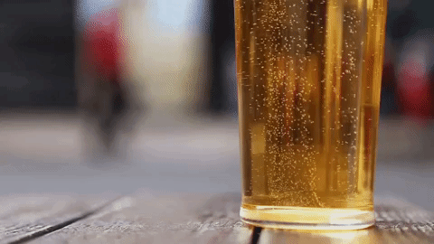

Summary
Visualizations

Using data collected and munged from the Great American Beer Festival and Yelp API information, we painted a fun, if not slightly inconclusive, picture of the beer scene in San Diego.
Our last project compared San Diego county to other counties within the United States.
This time around, we wanted to look within San Diego itself, and see what conclusions arose.
Javascript libraries used: